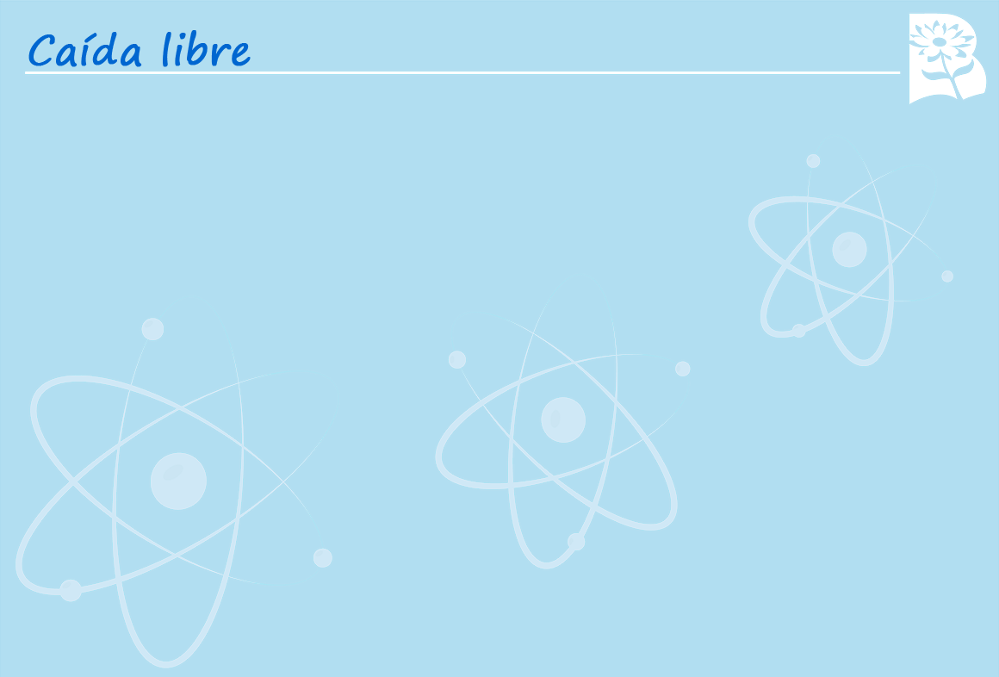

Selecciona la V si la afirmación en verdadera y F si es falsa.
Cuando no hay resistencia del aire, los objetos caen con la misma aceleración.
El valor de la aceleración de la gravedad es de -9,8 m/s
2
.
F
F
V
V